Compute the integral ∫
0∞ dx, where a < b.
dx, where a < b.
Solution:
This is an improper integral. Let I = ∫
0∞
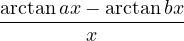
dx, then we have| I = | ∫
01 dx + ∫
1∞ dx + ∫
1∞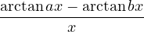 dx | ||
| = | limε→0+∫
ε1dx + limR→∞∫
1R dx. dx. |
We discuss for five cases below:
- (a)
-
0 < a < b
In this case, we haveI = limε→0+∫ ε1  dx + limR→∞∫
1R
dx + limR→∞∫
1R dx
dx= limε→0+∫ ε1 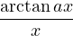
dx - limε→0+∫ ε1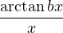
dx+ limR→∞∫ 1R 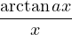
dx - limR→∞∫ 1R dx.
dx.Let u = ax in the first and third term; let u = bx in the second and fourth term, then we have
I = limε→0+∫ aεa 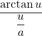
 du - limε→0+∫
bεb
du - limε→0+∫
bεb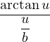
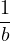
du+ limR→∞∫ aaR 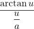
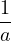
du - limR→∞∫ bbR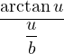
 du
du= limε→0+∫ aεa  du - limε→0+∫
bεb
du - limε→0+∫
bεb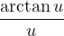
du+ limR→∞∫ aaR  du - limR→∞∫
bbR
du - limR→∞∫
bbR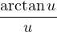
du= limε→0+∫ aεbε  du - limε→0+∫
ab
du - limε→0+∫
ab du
du+ limR→∞∫ aRbR 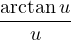
du - limR→∞∫ ba du.
du.Since the second and fourth term cancel out, we have
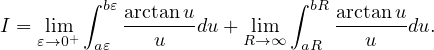
By M.V.T., there exists cr ∈ (ar,br) for r in ℝ+ such that
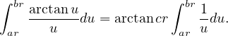
Thus, we have
I = limε→0+arctanc1ε∫ aεbε 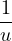
du + limR→∞arctanc2R∫ aRbR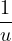
du= limε→0+arctanc1εln 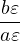
+ limR→∞arctanc2R ln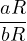
= ln  limε→0+arctanc1ε + ln
limε→0+arctanc1ε + ln limR→∞arctanc2R.
limR→∞arctanc2R.Since c1 > 0 and c2 > 0,
I = ln  ⋅ 0 + ln
⋅ 0 + ln ⋅
⋅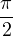
=  ln
ln .
.Therefore, I =
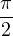
ln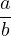
whenever 0 < a < b. - (b)
-
0 = a < b
In this case, we have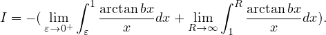
We observe that since
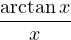
≥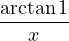
for x ≥ 1, ≥
≥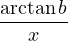
for b > 0 and x ≥ 1.
Thus, we have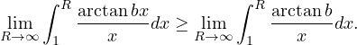
Since the limit limR→∞
 (arctanb)∫
1R
(arctanb)∫
1R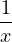
dx diverges, limR→∞∫
1R
diverges, limR→∞∫
1R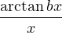
dx diverges as well by the comparison test for improper integrals.
Therefore, I diverges whenever 0 = a < b. - (c)
-
a < 0 < b
Let a = -α. Since arctangent is an odd function, we have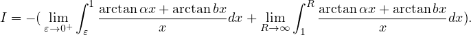
We look at the second term:
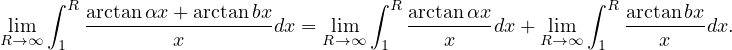
Since limR→∞∫ 1R
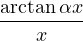
dx and limR→∞∫ 1R dx both diverge (we can prove these by using
the same method with regard to the comparison test for improper integrals in Question 1 (1) (b)),
limR→∞∫
1R
dx both diverge (we can prove these by using
the same method with regard to the comparison test for improper integrals in Question 1 (1) (b)),
limR→∞∫
1R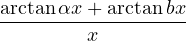
dx diverges; thus, I diverges.
Therefore, I diverges whenever a < 0 < b. - (d)
-
a < b = 0
Let a = -α. Since arctangent is an odd function, we have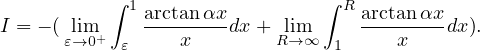
Since limR→∞∫ 1Rdx diverges (we can prove this by using the same method with regard to the comparison test for improper integrals in Question 1 (1) (b)), I diverges.
Therefore, I diverges whenever a < b = 0. - (e)
-
a < b < 0
Let a = -α and b = -β, then β < α. Since arctangent is an odd function, we haveI = -  limε→0+∫
ε1
limε→0+∫
ε1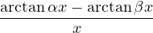
dx + limR→∞∫ 1R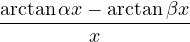
dx
⇔ I = limε→0+∫ ε1 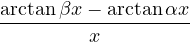
dx + limR→∞∫ 1RdxWe find the answer just by algebraically replacing β to the position of a and replacing α to the position of b in the result from Question 1 (1) (a), having
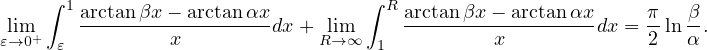
Therefore, I =
 ln
ln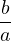
whenever a < b < 0.
Compute the limit limn→∞∑
k=12n(-1)k
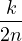
 111.
111.Solution:
We first change the form of the summation, having
limn→∞∑
k=12n(-1)k 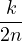  111 111 | = lim
n→∞ 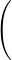 (-1) 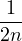  111 + (-1)3 111 + (-1)3 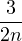  111 + + (-1)2n-1 111 + + (-1)2n-1 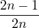  111 111 | ||
+ (-1)2 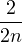  111 + (-1)4 111 + (-1)4 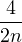  111 + 111 +  + (-1)2n + (-1)2n 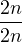  111 111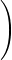 | |||
= limn→∞∑
i=1n(-1)  111 + 111 +   111 111 | |||
= limn→∞∑
i=1n   111 - 111 -  111. 111. |
Consider f(x) = x111, by M.V.T., there exists ci in  ,
, such that
such that
  f(x) f(x)  x=ci x=ci | = | ||
⇔  ⋅ ⋅  f(x) f(x) x=ci x=ci | = f   - f - f  . . |
Thus, we have
limn→∞∑
i=1n   111 - 111 -  111 111 | = lim
n→∞∑
i=1n ⋅ ⋅  f(x) f(x)  x=ci x=ci | ||
=  limn→∞∑
i=1n limn→∞∑
i=1n  f(x) f(x)  x=ci x=ci | |||
=  ∫
01 ∫
01 f(t)dt f(t)dt | |||
=  f(x) f(x) 01 01 | |||
=  1111 - 0111 1111 - 0111 | |||
| = . |
Therefore, limn→∞∑
k=12n(-1)k
 111 = .
111 = .